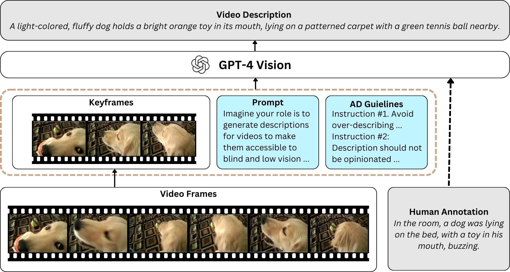
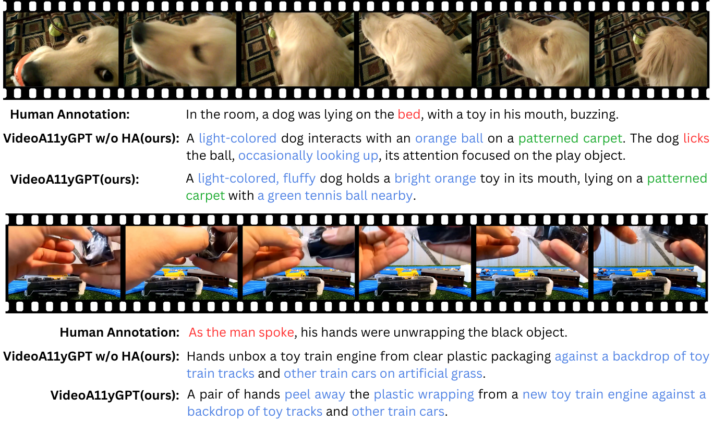
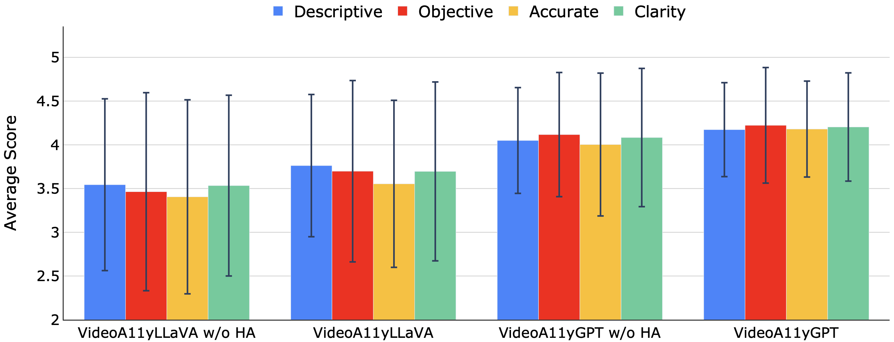
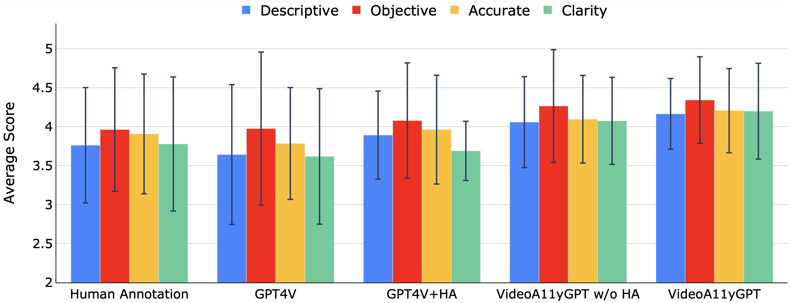
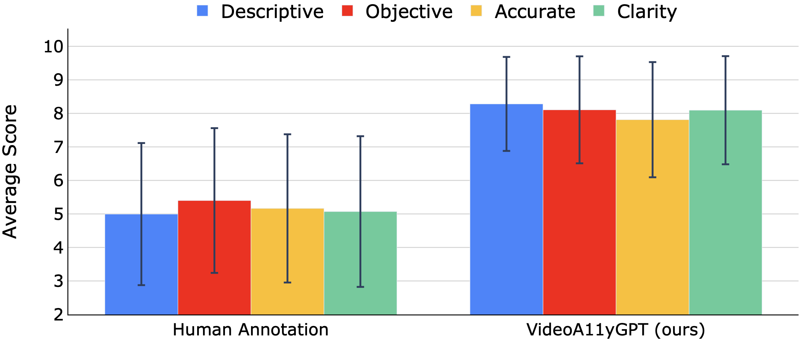
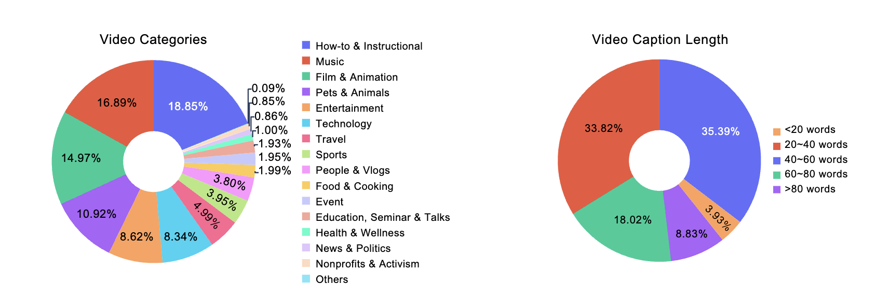
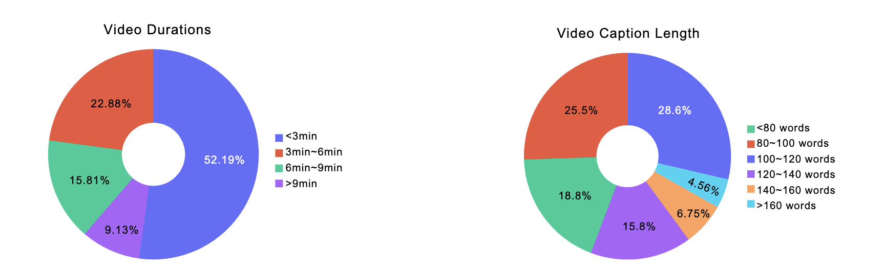

Video description is essential for blind and low vision (BLV) users to access visual
content. Yet, existing video description datasets are often limited by the quality of human
annotation, resulting in video accessibility not meeting the needs of BLV users. To bridge
this gap, we introduce VideoA11yGPT, an approach that leverages state-of-the-art multimodal
large language models (MLLMs) to generate video descriptions for BLV individuals.
Specifically, we curated 42 accessibility guidelines for video descriptions and prompted
MLLMs to generate or revise descriptions for video datasets. Our rigorous experiments across
15 video categories with sighted and BLV participants demonstrated that the descriptions
generated by VideoA11yGPT surpass the original human annotations in terms of clarity,
accuracy, objectivity, descriptiveness, and overall user satisfaction. We present two new
video description datasets, namely, YouCook2-BLV and VALOR32K-BLV tailored for BLV
individuals and demonstrate that VideoA11yGPT can provide high-quality descriptions for any
video content.
Approach Overview

VideoA11yGPT focuses on generating accurate descriptions free from grammatical errors
and suitable for BLV people based on video frames and, when available, existing human
descriptions. First, keyframes are extracted from the input video. Then, prompts, AD
guidelines, keyframes, and optional human annotations are provided to GPT-4V, which
subsequently generates accessible video descriptions
We gathered a total of 154 audio description (AD) guidelines from various online
sources, including Netflix Accessibility Guidelines, Ofcom Guidelines, Media Access
Canada Guidelines, and the Described and Captioned Media Program. These guidelines are
intended for professional and volunteer describers working on video content ranging from
entertainment to education. After collating these guidelines, we removed duplicates and
categorized them, focusing on whether they could be effectively used to prompt a vision
language model. This categorization process excluded guidelines that required subjective
human judgment or depended on audio cues, leading to a set of 42 optimized AD
guidelines.
Imagine your role is to generate descriptions for videos to make them accessible to blind and
low vision individuals. You will watch a sequence of keyframes from a video and read the current
description of this video. Your task is to revise the current description. You must follow all
the given instructions. Output your result in a dictionary format: {"Video_Category": A string
representing the category of video you believe it to be, "Revised_Desc": A string of revised
description.}

Experiments
Study 1
We assessed the video descriptions generated by VideoA11yGPT using human subject
studies that involved both sighted and BLV individuals. We created an evaluation
dataset of public videos and generated descriptions for each using VideoA11yGPT. We
defined four metrics to measure description quality and conducted two studies with
sighted participants on Amazon Mechanical Turk and one online study with BLV
participants. All studies were approved by the Institutional Review Board (IRB), and
participants gave informed consent by proceeding with the online surveys.
We conducted an Amazon MTurk experiment with sighted users to evaluate the quality
differences in video descriptions generated by open-source and proprietary machine
learning language models (MLLMs) using our accessibility guidelines (AD guidelines). The
models tested were Video-LLaVA as the open-source MLLM and GPT-4V as the proprietary
MLLM.
Video-LLaVA + AD Guidelines: Used our AD guidelines and video
keyframes as input, with descriptions generated by Video-LLaVA.
Video-LLaVA + AD Guidelines + Human Annotation: Similar to the
first condition, but also incorporated human annotations.
GPT-4V + AD Guidelines: Used our AD guidelines and video
keyframes as input, with descriptions generated by GPT-4V.
GPT-4V + AD Guidelines + Human Annotation: Similar to the third
condition, but also included human annotations.
We recruited 150 MTurk participants, and each participant watched one long video and one
short video clip, and read four descriptions for each video. Participants rated each
description based on a scale from "extremely bad" to "extremely good" across four
quality metrics. Below are the results from this study.

We used the related-samples Friedman Test to analyze our data, as the user ratings are
ordinal. The test revealed a significant effect of the description method. When
analyzing both long videos and video clips together, pairwise comparisons indicated that
VideoA11yGPT and VideoA11yGPT without human annotations significantly outperformed both
versions of VideoA11yLLaVA across all four metrics, with p-values less than 0.05. Given
these results, we focused on GPT-4V as the machine learning language model in subsequent
studies.
Study 2
In the second study, we recruited 150 new MTurk participants to evaluate the quality of
descriptions from VideoA11yGPT compared to those generated by human annotation alone or
by GPT-4V alone. Each participant viewed one long video and one short video clip, rating
five different descriptions for each video:
Human Annotation: Included descriptions generated by
humans.
GPT-4V: Utilized only the keyframes extracted from the videos.
The prompt did not include our AD guidelines or original human annotations.
GPT-4V + Human Annotation: Combined human annotations with
keyframes to generate descriptions.
GPT-4V + AD Guidelines (VideoA11yGPT without HA): Used our AD
guidelines and video keyframes as inputs for GPT-4V to generate descriptions.
GPT-4V + AD Guidelines + Human Annotation (VideoA11yGPT):
Similar to the fourth description but also included human annotations.

The study results indicated that VideoA11yGPT outperformed other methods across all
metrics, with statistically significant improvements (p-values under 0.002).
VideoA11yGPT without human annotations also showed significant enhancements over Human
Annotation, GPT-4V, and GPT-4V + Human Annotation in three out of four metrics except
for accuracy, where all p-values were below 0.05. This suggests the effectiveness of our
approach in enhancing video description quality.
Study 3
In the final study, we recruited 17 blind or low vision (BLV) participants, aged 21 to
44 years, to evaluate the effectiveness of VideoA11yGPT. The group consisted of 13
males, 3 females, and 1 who preferred not to specify their gender, all from the United
States. Among them, 7 were completely blind, and 10 were legally blind, with visual
acuities ranging from 20/500 to 20/1000. We selected five videos from various categories
for evaluation: Entertainment, How-to and Instructional, Sports, Pets and Animals, and
People and Vlogs. The videos featured both human annotations and descriptions generated
by VideoA11yGPT as audio descriptions, placed before the video segments they described,
following AD best practices.
Each BLV participant watched all five videos twice, with the two types of audio
descriptions presented in random order. They rated each description on a 10-point scale,
from 1 (extremely bad) to 10 (extremely good), to capture more nuanced feedback.
Participants also chose which video description they preferred and explained their
reasons.

The results from the BLV participants indicated that VideoA11yGPT descriptions
consistently outperformed human annotations across all video categories and metrics.
Specifically, VideoA11yGPT was chosen over human annotations with a selection rate of
91.76% (78 out of 85 instances), demonstrating significant enhancement in how BLV
individuals understand and enjoy video content.
Participants highlighted several reasons for preferring VideoA11yGPT, including the
detailed content, clarity, and accuracy of the descriptions, which depicted precise
actions and settings effectively. They also appreciated the narrative quality, essential
background, and contextual details provided, along with the effective synchronization of
descriptions with the unfolding events and the comprehensive coverage of aspects often
overlooked in human annotations. These factors collectively improved the viewing
experience for BLV users.
Datasets
Based on the positive outcomes, we used VideoA11yGPT (GPT-4V + AD Guidelines + Human
Annotation) to generate high-quality video descriptions for two well-known datasets in
the computer vision community: VALOR32K and YouCook2. This application is in line with
the MIT license permissions associated with these datasets, which allow free use,
modification, and distribution.
We have developed two new accessible datasets using our method: VALOR32K-BLV and
YouCook2-BLV. These datasets aim to enhance accessibility for the BLV community by
providing tailored video descriptions that improve understanding and engagement with
video content.
VALOR32K-BLV
The VALOR32K-BLV dataset has 29,635 video clips (23,268 trainset, 3,179 valset, and
3,188 testset) across 15 categories, each lasting 10 seconds. We generated these
categories alongside the video descriptions using GPT-4V, based on the 15 categories in
Section~\ref{sec:videos}. To verify categorization accuracy, we randomly sampled 5
videos from each category (75 videos in total) and recruited 225 MTurk participants (152
males, 71 females, aged 21--68 years) to rate the correctness of the assigned
categories. A video was deemed misclassified if at least two out of three votes
indicated an incorrect category. Our results confirmed that 96\% (72 out of 75) of the
videos were accurately categorized.

The average caption length in the VALOR32K-BLV dataset is 48.92 words, which is notably
longer than 19.68 words in the VALOR32K dataset. Figure 6 presents the caption length
distribution in VALOR32K-BLV, with the majority of captions ranging between 40-60 words
(35.4%) and 20-40 words (33.8%). Captions shorter than 20 words or longer than 80 words
comprise only 3.9% and 8.8%, respectively. The figure also shows video distribution
across 15 categories; How-to and Instructional (18.8%), Music (16.9%), and Film and
Animation (15%) dominate, while News and Politics and Nonprofits and Activism each make
up less than 1% of the videos.
YouCook2-BLV
The YouCook2-BLV dataset features 1,600 cooking videos (1,190 trainset, 410 valset) with
an average of 5.27 minutes in length. The average caption length in the YouCook2-BLV is
104.81 words which is considerably longer than 67.55 words in YouCook2. The distribution
of caption lengths in YouCook2-BLV (Figure 7) has a wide range, with most captions
falling within the 100-120 word range (28.6% of the total). This is followed by captions
spanning 80-100 words (25.5%), fewer than 80 words (18.8%), and those ranging from
120-140 words (15.8%). Longer captions, between 140-160 words and over 160 words,
comprise 6.8% and 4.6% of the data, respectively.

The caption length distribution in YouCook2-BLV shows a wide range, with the majority of
captions falling within the 100-120 word range, accounting for 28.6% of the total. This
is followed by captions that contain 80-100 words (25.5%), and those within the 120-140
word range (18.8%). Captions shorter than 80 words and those longer than 160 words make
up 6.8% and 4.6% of the dataset, respectively. This broader and longer range of caption
lengths reflects an emphasis on providing more comprehensive descriptions to enhance
accessibility for BLV viewers.
Sample Videos
Below are a few videos from the VALOR32K-BLV and YouCook2-BLV datasets with revised
descriptions using VideoA11yGPT.
Sample #1: VALOR32K-BLV
Video ID: FveaOFL7eOs
Video Category: How-to & Instructional
VideoA11yGPT: A person in a white protective beekeeping suit
inspects a large rectangular honeycomb frame. The frame is mostly covered with a pattern
of hexagonal cells, some filled with honey, while others are empty. The beekeeper holds
the frame with both hands, examining it closely. Bees crawl across the surface, their
buzzing audible. Text on the screen questions the absence of eggs or larvae in the brood
chamber.
Sample #2: VALOR32K-BLV
Video ID: jjOqzXCwDec
Video Category: Pets & Animals
VideoA11yGPT: A tabby cat peeks through a small, square pet door
built into a glass patio door, then steps out onto a brick patio. The scene shifts to
the cat confidently striding towards the camera. Subsequent frames show the brand name
'SUREFLAP' in bold white letters on a blue background, followed by the slogan 'SureFlap
pets are happy pets' in white script.
Sample #3: YouCook2-BLV
Video ID: ucaCmhNo78k
VideoA11yGPT: The video demonstrates the preparation of a cheesy
hash brown casserole. The cook starts by greasing a clear glass baking dish. Cream of
chicken soup is poured into the dish, followed by the addition of melted margarine. The
cook then sprinkles shredded Colby cheese into the mixture. After each ingredient is
added, the cook mixes them thoroughly. Diced onions are scattered over the mixture,
seasoned with salt and black pepper, and stirred in. Finally, shredded hash browns are
combined with the rest of the ingredients. The cook ensures an even distribution of all
components before transferring the dish to the oven to bake until golden brown. The
finished casserole is served on a plate, showcasing a crispy golden top with a creamy,
cheesy interior.
Sample #4: YouCook2-BLV
Video ID: GmkRlWA2kGI
VideoA11yGPT: A cooking tutorial follows, where a woman demonstrates
making a beef and potato dish. She begins by browning cubed beef in a pan. Next, she
fries onions until they are golden, then adds garlic, sliced carrots, and chopped red
pepper, cooking them for five minutes. The beef is returned to the pan, along with
flour, paprika, tomato puree, bay leaves, and beef stock. Canned tomatoes, red wine, and
sour cream are mixed in. The dish simmers for an hour and a half. Baby potatoes are
added and cooked for an additional thirty minutes. The final dish is presented on a
white plate, garnished with chopped parsley and accompanied by sliced tomatoes. The
woman tastes the dish, expressing satisfaction, and encourages viewers to subscribe to
her channel.
Acknowledgments
This research was supported by the National Eye Institute (NEI) of the National Institutes of Health
(NIH) under award number R01EY034562. The content is solely the responsibility of the authors
and does not necessarily represent the official views of the NIH.